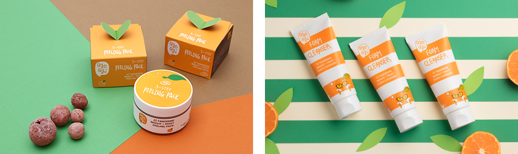

기획취재콘텐츠
- Home
- 제주라이프
- 기획취재콘텐츠
与清洁济州共同发展的化妆品品牌 第三篇새로운 글


聚焦于济州柑橘——QyoQyo（珂珂）
柑橘是清洁济州的代表性农作物，如今柑橘以化妆品形式重获新生。“QyoQyo（以下‘珂珂’）”是济州本土的自然主义化妆品品牌，聚焦于化妆品原料中的柑橘皮，先后研发推出了珂珂柑橘基础化妆品系列和防晒霜、洗面乳、身体护理产品。
柑橘是济州的代表性农作物，除了果实本身可供食用，还广泛用于制作柑橘酱和柑橘派等加工品。珂珂聚焦于柑橘作为化妆品原料的功效。柑橘富含维生素C，在抗氧化、美白、抗菌方面功效显著，非常适合用于制作化妆品。特别是济州柑橘皮含有大量其他水果所没有的橘皮苷（Hesperidin），而该成分对保持皮肤弹性具有良好效果。
- 珂珂柑橘亮白+保湿爽肤水、珂珂柑橘亮白+保湿乳液 ⓒ珂珂 -
- 珂珂柑橘亮白+保湿面膜 ⓒ珂珂 -
珂珂柑橘基础化妆品系列以柑橘皮提取物为基础，结合玫瑰、波斯菊、茉莉花、百合花、花菖蒲、木槿花、莲花等7种花卉提取物，最大程度地发挥保湿效果，并利用甘草成分增添舒缓效果。珂珂柑橘亮白+保湿去角质面膜结合了多种植物提取物——有效吸附废物和死皮的火山岩泥、具有美白功效的小柑橘、具有保湿和舒缓功能的济州箬竹和芦荟等，兼具清洁、美白、保湿三重功效。

- (左)珂珂柑橘亮白+保湿去角质面膜, (右)柑橘亮白+保湿泡沫洁面乳 ⓒ珂珂 -
济州特产柑橘皮具有出色的抗炎、抗氧化、美白功效，实际上也被韩医院用于治疗皮肤问题。珂珂聚焦于橘皮功效，开发出适合女性敏感肌肤的基础化妆品系列。
珂珂品牌创立于2016年，发展历程较短，但已经走出国门，且出口占比高达80%，正在占领全球K-美状粉丝的化妆台。珂珂的产品远销海外，现已覆盖荷兰、瑞典、德国、波兰、美国、中国、日本、俄罗斯、台湾、新加坡等亚美欧国家或地区的线上线下门店。珂珂柑橘系列还在济州新罗酒店和肯辛顿酒店等著名酒店和度假村礼品店、济州及仁川国际机场免税店热卖，备受国内外游客青睐。
- 珂珂柑橘亮白+保湿礼盒套装 ⓒ珂珂 -
珂珂品牌本身来自UNESCO世界遗产三冠王——清洁济州岛，品牌理念和故事源自柑橘这一济州代表性特产，向全球客户展示了耳目一新的形象。此外，近年来公害和气候变化成为热门话题，使得自然友好型原料和品牌备受瞩目，而清洁济州也在这种潮流中成为了备受关注的魅力之岛。再加上自然主义美容产业潮流和济州、柑橘原料的影响，让珂珂品牌和产品受到高度关注，获得了良好反响。
珂珂品牌致力于继承K-美妆韩流传统，将以济州柑橘皮提取物为基础成分，进一步丰富产品阵容。品牌从瞄准10~30岁女性的珂珂女孩系列着手，还计划在2020年下半年继续推出适合30~50岁女性的珂珂女士系列产品。另外，考虑到此前主要利用成熟果实原料开发产品，今后将通过未熟果实（青橘）系列扩充产品阵容，进而结合济州丰富多样的植物性化妆品原料，推出多种多样的化妆产品，打造符合"自然主义"和"植物源性原料"关键词的美容品牌。
다음글